Neural Networks
Most introductory posts on neural networks start by introducing a biological neuron and then go on to explain how we can represent a biological neuron by a step function. To simply the training procedure, we then approximate the step function by a smooth sigmoid or hyperbolic tan function. Here we are going to take a fairly different approach by looking at the geometry behind a single neuron. Then build up some intuition as to why we use layers of neurons and then stack these layers. Using these ideas, you will build up an understanding for the Universal Approximation Theorem and the relation between neural networks and decision trees.
Anyhow, a neuron is just a function which takes multiple inputs, i.e., a vector and produces one output, a scalar. For simplicity of presentations, lets suppose our input is of dimension 3.

The simplest possible function which turns a vector into a scalar is a weighted sum which can be represented by an inner product, $$f(x_1, x_2, x_3) = \begin{pmatrix} w_1 & w_2 & w_3 \end{pmatrix} \begin{pmatrix} x_1 \\ x_2 \\ x_3 \end{pmatrix} = w_1 x_1 + w_2 x_2 + w_3 x_3.$$ To increase the flexibility of the function, we could also include an additional parameter known as the bias, so $$f(x_1, x_2, x_3) = \begin{pmatrix} w_1 & w_2 & w_3 \end{pmatrix} \begin{pmatrix} x_1 \\ x_2 \\ x_3 \end{pmatrix} + b = w_1 x_1 + w_2 x_2 + w_3 x_3 + b.$$
To make our artifical neuron behave like a biological neuron, we apply a step function. So finally we have $$f(x_1, x_2, x_3) = \sigma \left(\begin{pmatrix} w_1 & w_2 & w_3 \end{pmatrix} \begin{pmatrix} x_1 \\ x_2 \\ x_3 \end{pmatrix} + b \right).$$ Where $\sigma$ is the step function which looks like this:
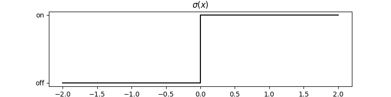
A single neuron with a step function actually just splits the input space into two using a hyperplane. Consider a two dimensional input (this is the easiest to visualise), the weights control the direction of the hyperplane.
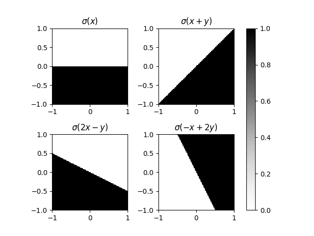
And the bias controls the shift.
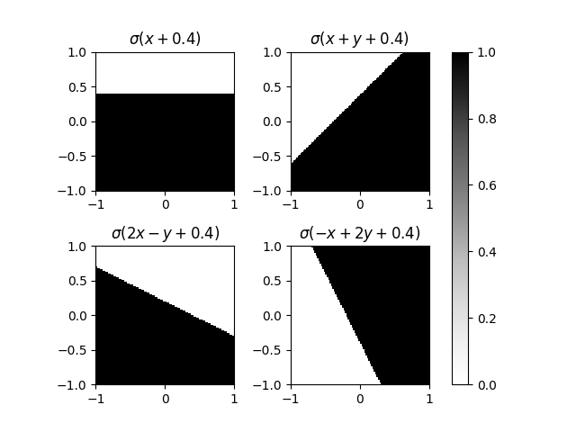
If we were using a neural network for a binary classification problem, then it is clear that a single neuron is very restrictive. It is natural to question, what if we have more than one neuron. But remember, a single neuron always produces a scalar, so two neurons next to each other actually produce a vector of dimension two. The output of a layer of n neurons is in fact a vector of dimension n.

Two neurons equates to two hyperplanes where each hyperplane splits the regions into two. And so two neurons could lead to at most four regions. Whereas $n$ neurons leads to at most $2^n$ regions. The output is a binary vector where each entry relates to either the left and side or right hand side of its corresponding hyperplane. After this layer, any point in a single region is indistinguishable from any other point in that same region.
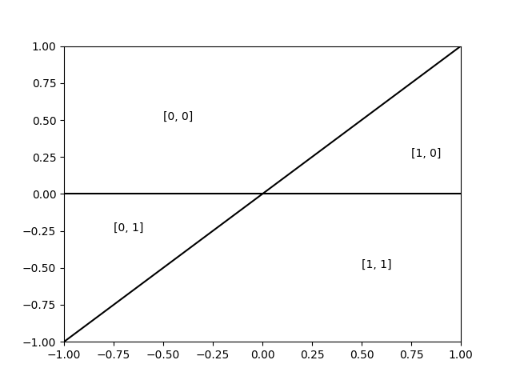
In fact the layer of two neurons has mapped every point in the original two dimensional space to one of these 4 node. Each nodes corresponds to a corner of a $n$ dimensional hypercube (a square in our case).
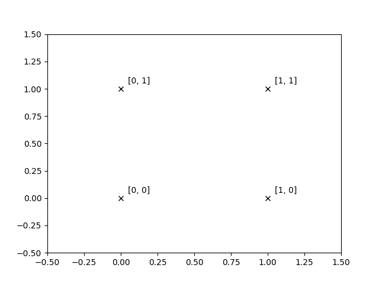
Well what if we fed the output of this layer into another single neuron?

Well this neuron doesnt realise that the input space is one of four points, it just divides the whole space regardless. But now the output of this two layered neural network is quite interesting. We have put act the points mapping to $[0, 1]$ in one class and all the other points in another.
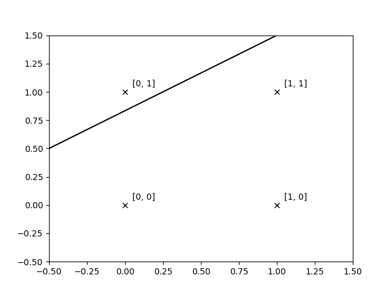
And so the neural network actually classifies this region.
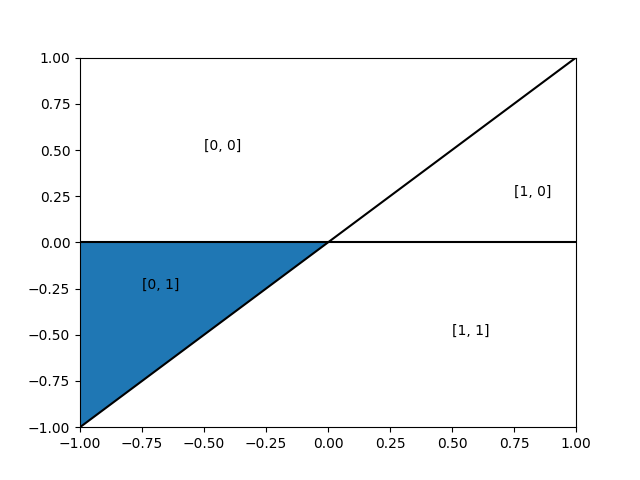
So the first layer of the neural network just carves up regions in our space and the second layer groups these regions. Whatever classification problem you gave me, I would be able to, with enough neurons, carve up the space such that no region contained elements from different classes. And then my second layer could group all the regions belonging to a specific class. This is the premise of the universal Approximation theorem.
Lets consider a simple classification problem.
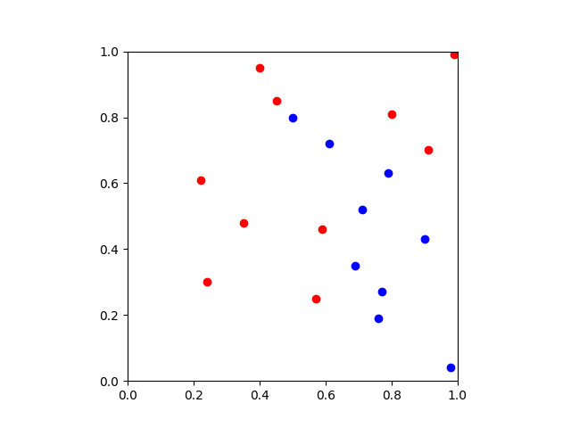
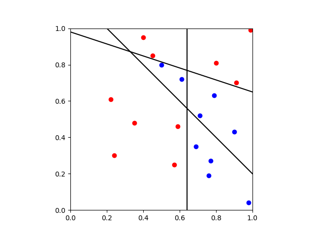
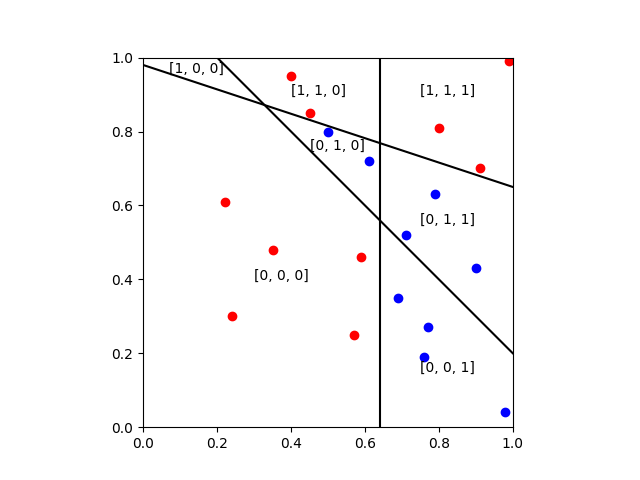
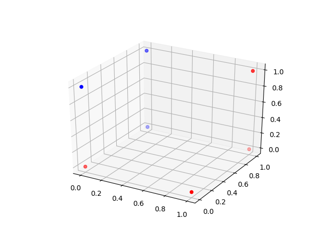
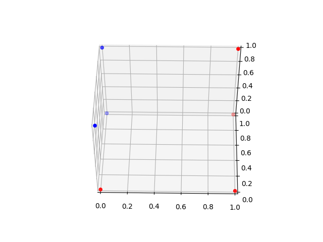
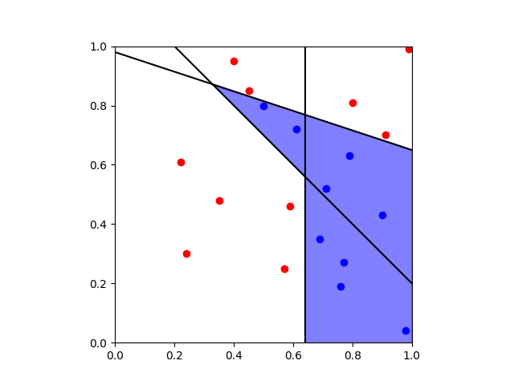
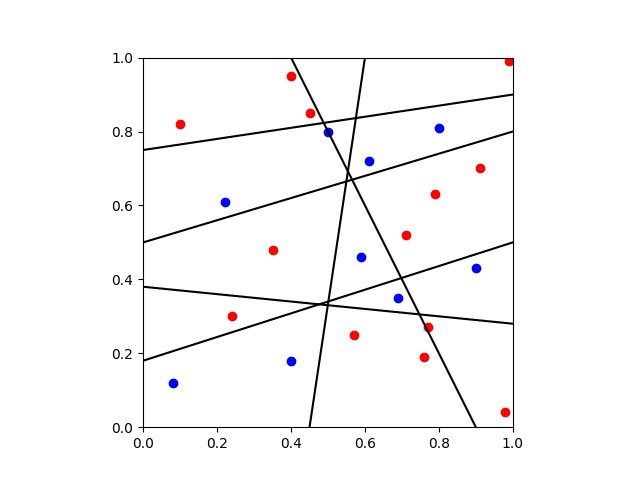
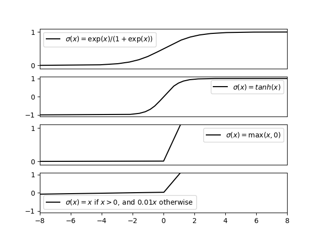
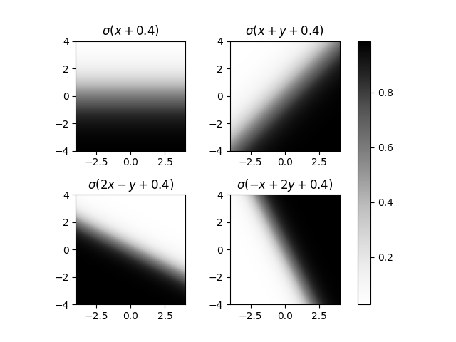
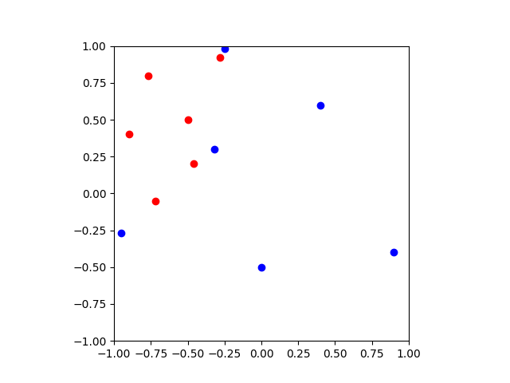
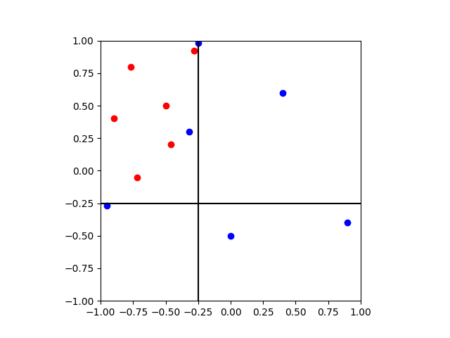

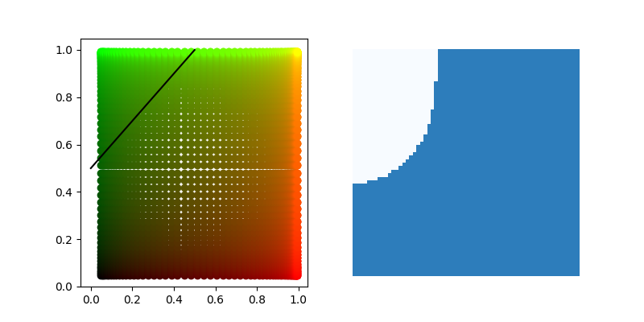
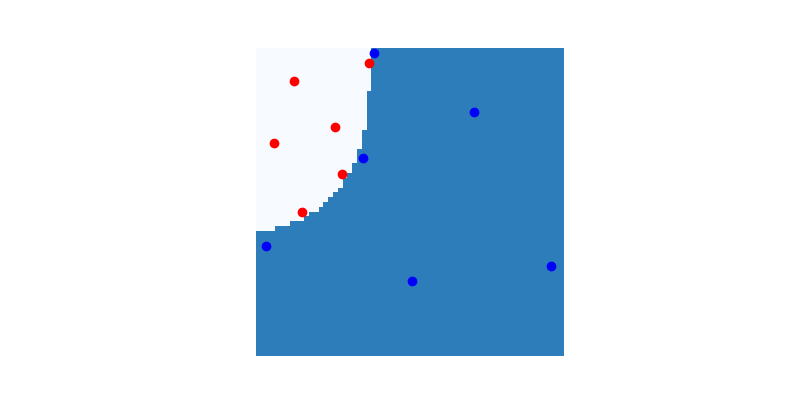